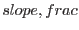
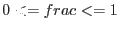
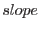
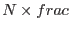
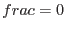
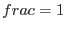
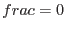
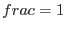

XMM-Newton Science Analysis System
oal (oal-3.133.1) [xmmsas_20170112_1337-16.0.0]
SAS_OBT_MET_LINEAR
Setting this variable to a comma separated list of two numbers 
with  overrides any values given to
SAS_OBT_MET_FIT. It enforces a linear relationship between
OBT and MET with a slope of . For this only one data point from
the Time Correlation File is needed. The point taken is 
with  being the total number of points available, e.g.  selects
the first,  the last point.
being the total number of points available, e.g.  selects
the first,  the last point.
Caution: Please alter the above parameters via
SAS_OBT_MET_LINEAR only when you exactly know what you are doing.
Out-of-range conditions are caught but improper values can lead to inaccurate
event arrival times.
XMM-Newton SOC/SSC -- 2017-01-12